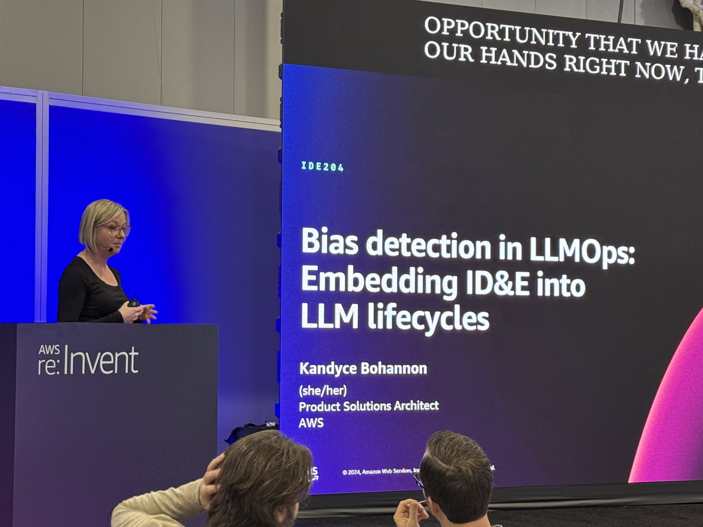
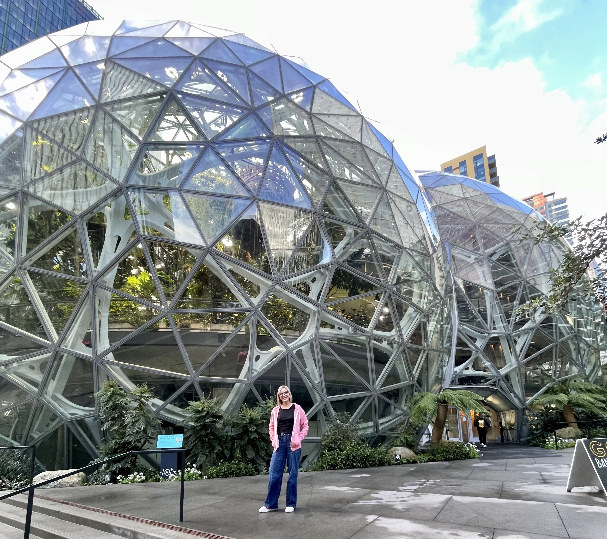
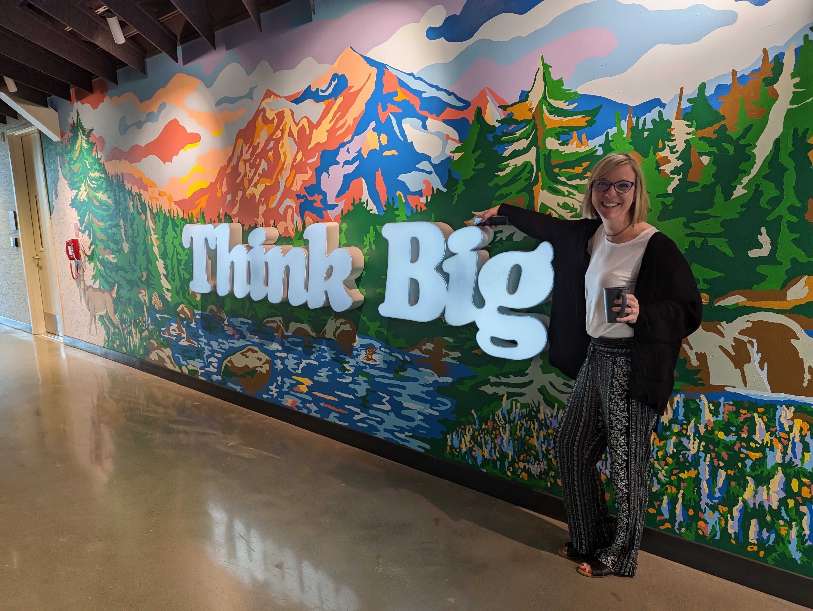

About Me
Enterprise AI Strategist · Director of Market Solutions, Cloud & AI · Technical GTM Leader
My Journey
I'm a Director of Market Solutions at Slalom, specializing in Cloud & AI. With 15+ years bridging deep cloud architecture with multimillion-dollar business outcomes, I operate at the intersection of enterprise technology strategy and hands-on execution.
I lead large-scale AI engagements, from a multi-million-dollar SDLC modernization for a 500+ person IT organization to architecting multi-phase AI decision engines for manufacturing clients using AWS Bedrock and RAG patterns. My edge is that I stay close to the craft: I build daily with Kiro and Claude Code, which means the strategy I bring to clients is grounded in what actually works in production.
Before Slalom, I spent five years at AWS as a Solutions Architect across retail, healthcare, and developer tools, ultimately as a Specialist SA for Amazon Q Developer (now Kiro). That foundation, combined with 10 years at 3M spanning engineering, architecture, and technical leadership, gives me an unusually broad lens on what it takes to move organizations through technology change.
Career Progression
Director of GTM, Technology - Slalom
Leading go-to-market strategy in technology, connecting cloud and AI capabilities to client business outcomes
Specialist Solutions Architect - AWS
Amazon Q Developer (now Kiro) - Drove developer productivity through AI-powered tools, custom agents, and public advocacy
Product Solutions Architect - AWS
Healthcare & Life Sciences - Clinical trial space, regulatory compliance, and data platforms
Account Solutions Architect - AWS
Retail space - Cloud architecture and digital transformation initiatives
Principal DevOps Engineer - Medtronic
Leading DevOps practices and automation in healthcare technology
Various Roles in Engineering, Architecture, and Technical Leadership - 3M
10 years building technical expertise across multiple domains
What Drives Me
- Technology Strategy: Connecting emerging tech to measurable business outcomes
- AI-Powered Development: Staying hands-on with Kiro and Claude Code to lead with credibility
- Team Enablement: Building the conditions for teams to ship with confidence
- Knowledge Sharing: Translating complex ideas into practical guidance at scale
Speaking & Community

Speaking at AWS re:Invent 2024 on "Bias detection in LLMOps: Embedding ID&E into LLM lifecycles"

At the Amazon Spheres, Seattle

AWS Think Big event